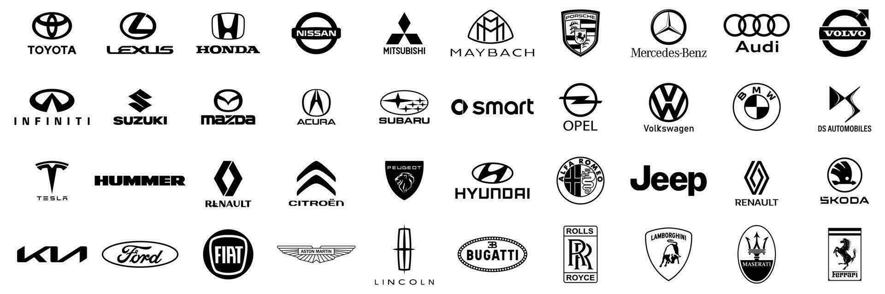

Primera Base de Datos Carros

BDCARS es una innovadora empresa dedicada a la venta y alquiler de vehículos. Nuestra base de datos permite a los usuarios realizar consultas eficaces sobre el inventario de autos, facilitando la búsqueda por características específicas. Con un enfoque en la eficiencia y la facilidad de uso, BDCARS ofrece una plataforma intuitiva para que los clientes encuentren el carro que mejor se adapte a sus necesidades.
{
db.cars.insertMany([
{ marca: 'toyota', modelo: 'corolla', año_fabricacion: 2015, precio: 52000000, consumo_combustible: 7.5, color: 'gris', capacidad_pasajeros: 5, tipo_transmision: 'automática', potencia_motor: 132, sistema_seguridad: 'airbags, ABS, control de tracción' },
{ marca: 'honda', modelo: 'civic', año_fabricacion: 2016, precio: 68000000, consumo_combustible: 7.0, color: 'blanco', capacidad_pasajeros: 5, tipo_transmision: 'manual', potencia_motor: 158, sistema_seguridad: 'airbags, frenos de disco en las 4 ruedas, control de estabilidad' },
{ marca: 'nissan', modelo: 'sentra', año_fabricacion: 2017, precio: 75000000, consumo_combustible: 6.8, color: 'negro', capacidad_pasajeros: 5, tipo_transmision: 'automática', potencia_motor: 149, sistema_seguridad: 'airbags, ABS, alerta de cambio de carril' },
{ marca: 'mazda', modelo: 'mazda 3', año_fabricacion: 2018, precio: 81000000, consumo_combustible: 7.2, color: 'azul', capacidad_pasajeros: 5, tipo_transmision: 'automática', potencia_motor: 186, sistema_seguridad: 'control de tracción, ABS, asistente de arranque en pendientes' },
{ marca: 'chevrolet', modelo: 'malibu', año_fabricacion: 2019, precio: 89000000, consumo_combustible: 7.6, color: 'rojo', capacidad_pasajeros: 5, tipo_transmision: 'automática', potencia_motor: 160, sistema_seguridad: 'airbags, control de estabilidad, frenos ABS' },
{ marca: 'ford', modelo: 'fusion', año_fabricacion: 2020, precio: 95000000, consumo_combustible: 8.0, color: 'plata', capacidad_pasajeros: 5, tipo_transmision: 'automática', potencia_motor: 175, sistema_seguridad: 'airbags, monitoreo de punto ciego, ABS' },
{ marca: 'hyundai', modelo: 'elantra', año_fabricacion: 2021, precio: 104000000, consumo_combustible: 7.1, color: 'gris', capacidad_pasajeros: 5, tipo_transmision: 'automática', potencia_motor: 147, sistema_seguridad: 'airbags, control de estabilidad, cámara de reversa' },
{ marca: 'kia', modelo: 'optima', año_fabricacion: 2022, precio: 110000000, consumo_combustible: 7.4, color: 'blanco', capacidad_pasajeros: 5, tipo_transmision: 'automática', potencia_motor: 178, sistema_seguridad: 'control de estabilidad, ABS, asistente de frenado de emergencia' },
{ marca: 'volkswagen', modelo: 'jetta', año_fabricacion: 2023, precio: 118000000, consumo_combustible: 7.5, color: 'negro', capacidad_pasajeros: 5, tipo_transmision: 'automática', potencia_motor: 158, sistema_seguridad: 'airbags, control de tracción, monitoreo de presión de neumáticos' },
{ marca: 'audi', modelo: 'a4', año_fabricacion: 2014, precio: 125000000, consumo_combustible: 7.3, color: 'gris', capacidad_pasajeros: 5, tipo_transmision: 'automática', potencia_motor: 188, sistema_seguridad: 'airbags, ABS, control de estabilidad, asistente de colisión frontal' },
{ marca: 'bmw', modelo: 'serie 3', año_fabricacion: 2013, precio: 135000000, consumo_combustible: 8.0, color: 'blanco', capacidad_pasajeros: 5, tipo_transmision: 'automática', potencia_motor: 255, sistema_seguridad: 'airbags, frenado autónomo de emergencia, asistente de mantenimiento de carril' },
{ marca: 'mercedes-benz', modelo: 'clase c', año_fabricacion: 2012, precio: 145000000, consumo_combustible: 7.8, color: 'negro', capacidad_pasajeros: 5, tipo_transmision: 'automática', potencia_motor: 241, sistema_seguridad: 'airbags, ABS, control de estabilidad, monitoreo de punto ciego' },
{ marca: 'porsche', modelo: 'panamera', año_fabricacion: 2021, precio: 460000000, consumo_combustible: 9.5, color: 'azul', capacidad_pasajeros: 5, tipo_transmision: 'automática', potencia_motor: 330, sistema_seguridad: 'control de tracción, ABS, sistema de detección de peatones' },
{ marca: 'tesla', modelo: 'model s', año_fabricacion: 2020, precio: 500000000, consumo_combustible: 0, color: 'rojo', capacidad_pasajeros: 5, tipo_transmision: 'automática', potencia_motor: 1020, sistema_seguridad: 'autopilot, control de estabilidad, airbags, ABS' },
{ marca: 'mitsubishi', modelo: 'lancer', año_fabricacion: 2018, precio: 76000000, consumo_combustible: 7.1, color: 'plata', capacidad_pasajeros: 5, tipo_transmision: 'manual', potencia_motor: 148, sistema_seguridad: 'frenos ABS, airbags, control de estabilidad' },
{ marca: 'subaru', modelo: 'impreza', año_fabricacion: 2019, precio: 82000000, consumo_combustible: 7.3, color: 'blanco', capacidad_pasajeros: 5, tipo_transmision: 'manual', potencia_motor: 152, sistema_seguridad: 'control de tracción, airbags, ABS, asistente de arranque en pendiente' },
{ marca: 'jeep', modelo: 'wrangler', año_fabricacion: 2021, precio: 185000000, consumo_combustible: 10.0, color: 'verde', capacidad_pasajeros: 5, tipo_transmision: 'manual', potencia_motor: 285, sistema_seguridad: 'airbags, frenos ABS, cámara de reversa, control de estabilidad' },
{ marca: 'land rover', modelo: 'defender', año_fabricacion: 2022, precio: 370000000, consumo_combustible: 12.0, color: 'gris', capacidad_pasajeros: 5, tipo_transmision: 'automática', potencia_motor: 395, sistema_seguridad: 'airbags, sistema de detección de peatones, control de estabilidad' },
{ marca: 'volvo', modelo: 'xc90', año_fabricacion: 2021, precio: 320000000, consumo_combustible: 9.8, color: 'azul', capacidad_pasajeros: 7, tipo_transmision: 'automática', potencia_motor: 316, sistema_seguridad: 'asistente de colisión, control de estabilidad, airbags' },
{ marca: 'alfa romeo', modelo: 'giulia', año_fabricacion: 2020, precio: 260000000, consumo_combustible: 8.4, color: 'rojo', capacidad_pasajeros: 5, tipo_transmision: 'automática', potencia_motor: 280, sistema_seguridad: 'airbags, monitoreo de punto ciego, asistente de colisión' },
{ marca: 'renault', modelo: 'koleos', año_fabricacion: 2015, precio: 105000000, consumo_combustible: 7.9, color: 'azul', capacidad_pasajeros: 5, tipo_transmision: 'automática', potencia_motor: 170, sistema_seguridad: 'airbags, control de estabilidad, frenos ABS' },
{ marca: 'peugeot', modelo: '308', año_fabricacion: 2014, precio: 98000000, consumo_combustible: 7.4, color: 'rojo', capacidad_pasajeros: 5, tipo_transmision: 'manual', potencia_motor: 155, sistema_seguridad: 'airbags, control de tracción, alerta de cambio de carril' },
{ marca: 'fiat', modelo: 'tipo', año_fabricacion: 2016, precio: 88000000, consumo_combustible: 6.9, color: 'blanco', capacidad_pasajeros: 5, tipo_transmision: 'manual', potencia_motor: 120, sistema_seguridad: 'airbags, ABS, asistente de frenado de emergencia' },
{ marca: 'mini', modelo: 'cooper', año_fabricacion: 2022, precio: 120000000, consumo_combustible: 6.5, color: 'verde', capacidad_pasajeros: 4, tipo_transmision: 'automática', potencia_motor: 189, sistema_seguridad: 'airbags, frenos ABS, sistema de detección de peatones' },
{ marca: 'suzuki', modelo: 'swift', año_fabricacion: 2018, precio: 60000000, consumo_combustible: 6.2, color: 'azul', capacidad_pasajeros: 5, tipo_transmision: 'manual', potencia_motor: 110, sistema_seguridad: 'airbags, ABS, control de estabilidad' },
{ marca: 'gmc', modelo: 'acadia', año_fabricacion: 2020, precio: 210000000, consumo_combustible: 8.9, color: 'negro', capacidad_pasajeros: 7, tipo_transmision: 'automática', potencia_motor: 310, sistema_seguridad: 'airbags, control de tracción, sistema de monitoreo de punto ciego' },
{ marca: 'cadillac', modelo: 'xt5', año_fabricacion: 2021, precio: 340000000, consumo_combustible: 9.2, color: 'plata', capacidad_pasajeros: 5, tipo_transmision: 'automática', potencia_motor: 310, sistema_seguridad: 'airbags, frenado autónomo de emergencia, asistente de mantenimiento de carril' },
{ marca: 'lincoln', modelo: 'aviator', año_fabricacion: 2022, precio: 420000000, consumo_combustible: 9.5, color: 'blanco', capacidad_pasajeros: 7, tipo_transmision: 'automática', potencia_motor: 400, sistema_seguridad: 'airbags, control de estabilidad, sistema de detección de peatones' },
{ marca: 'dodge', modelo: 'durango', año_fabricacion: 2019, precio: 290000000, consumo_combustible: 10.8, color: 'rojo', capacidad_pasajeros: 7, tipo_transmision: 'automática', potencia_motor: 293, sistema_seguridad: 'airbags, control de tracción, monitoreo de punto ciego' },
{ marca: 'chrysler', modelo: 'pacifica', año_fabricacion: 2020, precio: 250000000, consumo_combustible: 9.0, color: 'gris', capacidad_pasajeros: 7, tipo_transmision: 'automática', potencia_motor: 287, sistema_seguridad: 'airbags, ABS, alerta de tráfico cruzado trasero' },
{ marca: 'buick', modelo: 'encore', año_fabricacion: 2017, precio: 170000000, consumo_combustible: 7.6, color: 'negro', capacidad_pasajeros: 5, tipo_transmision: 'automática', potencia_motor: 153, sistema_seguridad: 'airbags, ABS, cámara de reversa, control de estabilidad' },
{ marca: 'infiniti', modelo: 'qx50', año_fabricacion: 2019, precio: 310000000, consumo_combustible: 8.7, color: 'azul', capacidad_pasajeros: 5, tipo_transmision: 'automática', potencia_motor: 268, sistema_seguridad: 'control de estabilidad, monitoreo de punto ciego, frenado autónomo de emergencia' },
{ marca: 'lexus', modelo: 'nx', año_fabricacion: 2021, precio: 380000000, consumo_combustible: 8.9, color: 'blanco', capacidad_pasajeros: 5, tipo_transmision: 'automática', potencia_motor: 235, sistema_seguridad: 'airbags, asistente de colisión, ABS, monitoreo de presión de neumáticos' },
{ marca: 'jaguar', modelo: 'f-pace', año_fabricacion: 2020, precio: 450000000, consumo_combustible: 9.4, color: 'rojo', capacidad_pasajeros: 5, tipo_transmision: 'automática', potencia_motor: 296, sistema_seguridad: 'airbags, control de estabilidad, asistente de arranque en pendiente' },
{ marca: 'maserati', modelo: 'levante', año_fabricacion: 2022, precio: 620000000, consumo_combustible: 10.3, color: 'gris', capacidad_pasajeros: 5, tipo_transmision: 'automática', potencia_motor: 345, sistema_seguridad: 'control de tracción, airbags, frenos ABS, monitoreo de punto ciego' },
{ marca: 'genesis', modelo: 'gv80', año_fabricacion: 2021, precio: 370000000, consumo_combustible: 9.6, color: 'negro', capacidad_pasajeros: 7, tipo_transmision: 'automática', potencia_motor: 300, sistema_seguridad: 'airbags, ABS, monitoreo de presión de neumáticos, alerta de cambio de carril' },
{ marca: 'bentley', modelo: 'bentayga', año_fabricacion: 2022, precio: 950000000, consumo_combustible: 11.5, color: 'verde', capacidad_pasajeros: 5, tipo_transmision: 'automática', potencia_motor: 542, sistema_seguridad: 'airbags, control de estabilidad, monitoreo de punto ciego, cámara de 360 grados' },
{ marca: 'rolls-royce', modelo: 'cullinan', año_fabricacion: 2021, precio: 1100000000, consumo_combustible: 12.1, color: 'azul', capacidad_pasajeros: 5, tipo_transmision: 'automática', potencia_motor: 563, sistema_seguridad: 'frenado autónomo, control de tracción, detección de peatones, airbags' },
{ marca: 'aston martin', modelo: 'dbx', año_fabricacion: 2020, precio: 1000000000, consumo_combustible: 12.5, color: 'negro', capacidad_pasajeros: 5, tipo_transmision: 'automática', potencia_motor: 542, sistema_seguridad: 'airbags, frenos ABS, control de tracción, sistema de detección de peatones' },
{ marca: 'bugatti', modelo: 'chiron', año_fabricacion: 2022, precio: 1150000000, consumo_combustible: 15.6, color: 'rojo', capacidad_pasajeros: 2, tipo_transmision: 'automática', potencia_motor: 1500, sistema_seguridad: 'airbags, control de estabilidad, control de tracción, ABS' }
])
}
// Buscar todos los carros que tengan el color rojo
db.cars.find({ color: { $eq: 'rojo' } });
// Buscar los carros que se fabricaron después del año 2018
db.cars.find({ año_fabricacion: { $gt: 2018 } });
// MOstrar todos los carros que tengan un precio mayor o igual a 200 millones de pesos
db.cars.find({ precio: { $gte: 200000000 } });
// Mostrar los carros que tienen menos de 5 asientos para pasajeros
db.cars.find({ capacidad_pasajeros: { $lt: 5 } });
// Buscar carros cuya potencia del motor sea de máximo 150 caballos de fuerza
db.cars.find({ potencia_motor: { $lte: 150 } });
// Mostrar todos los carros que no sean de la marca Toyota
db.cars.find({ marca: { $ne: 'toyota' } });
// Buscar carros que tengan alguno de estos colores: rojo, blanco o azul
db.cars.find({ color: { $in: ['rojo', 'blanco', 'azul'] } });
// Mostrar los carros que no sean de las marcas Ford o Chevrolet
db.cars.find({ marca: { $nin: ['ford', 'chevrolet'] } });
// buscar autos cuyo año de fabricación no esté entre 2020 y 2022.
db.collection.find({
'año_fabricacion': { $nin: [2020, 2021, 2022] } })
// Eliminar el carro cuyo modelo es 'renault koleos'
db.cars.deleteOne({ modelo: 'koleos' });

Buscar todos los carros que tengan el color rojo

Buscar los carros que se fabricaron después del año 2018

MOstrar todos los carros que tengan un precio mayor o igual a 200 millones de pesos.

Mostrar los carros que tienen menos de 5 asientos para pasajeros

Buscar carros cuya potencia del motor sea de máximo 150 caballos de fuerza

Mostrar todos los carros que no sean de la marca Toyota

Buscar carros que tengan alguno de estos colores: rojo, blanco o azul

Mostrar los carros que no sean de las marcas Ford o Chevrolet

buscar autos cuyo año de fabricación no esté entre 2020 y 2022.

Eliminar el carro cuyo modelo es 'renault koleos'